|
|
| hard corals text index | photo index |
| Phylum Cnidaria > Class Anthozoa > Subclass Zoantharia/Hexacorallia > Order Scleractinia > Family Poritidae > Genus Goniopora |
| Small
goniopora coral Goniopora sp.* Family Poritidae updated Nov 2019 Where seen? This small hard coral with tiny polyps are often seen on many of of our shores, including some Northern shores. More commonly seen on our Southern shores. Features: Colonies 10-15cm, small low dome-shaped or encrusting. The corallites are tiny (0.2cm) circular or polygonal, packed close to one another. Polyps tiny (0.5-1cm) with relatively medium length body column. Polyps can retract completely into the skeleton. Colony colours seen include pink, purple, greenish, yellow and brown. Sometimes, tiny brown acoel flatworms are seen on the oral disk or body columns of anemone coral polyps. May be confused with Favid corals (Family Faviidae) or Pore corals (Porites sp.), but polyp body column of these other corals are not as long as those of Goniopora corals. |
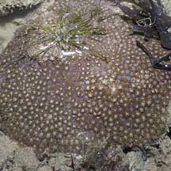 Labrador, Jun 05 |
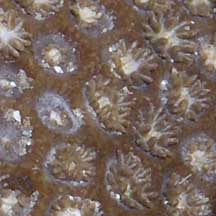 Polyps can retrat completely. |
 Corallites tiny circular or polygonal. |

|
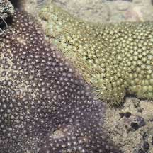 Labrador, Jun 05 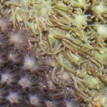 |
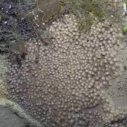 Pulau Hantu, Apr 06 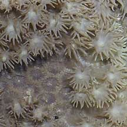 |
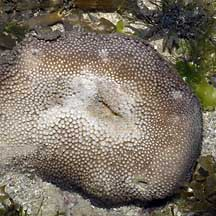 Labrador, May 06 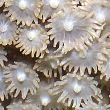 |
*Species are difficult to positively identify without close examination.
On this website, they are grouped by external features for convenience of display
| Small goniopora corals on Singapore shores |
On wildsingapore
flickr
|
| Other sightings on Singapore shores |
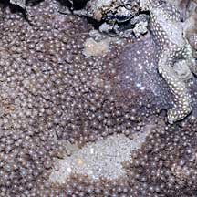 Pulau Senang, Jun 10 |
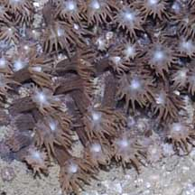 |
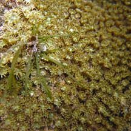 South Cyrene, Oct 10 |
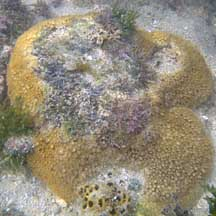 Terumbu Buran, Nov 10 |
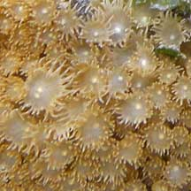 |
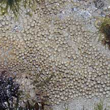 Pulau Biola, Dec 09 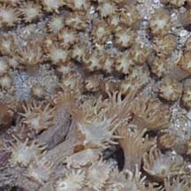 |
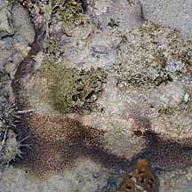 Terumbu Berkas, Jan 10 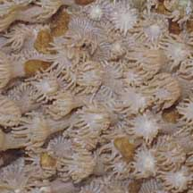 |
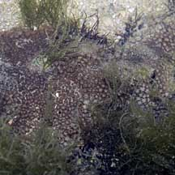 Terumbu Salu, Jan 10 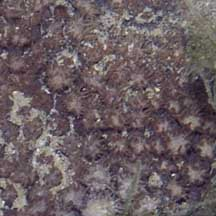 |